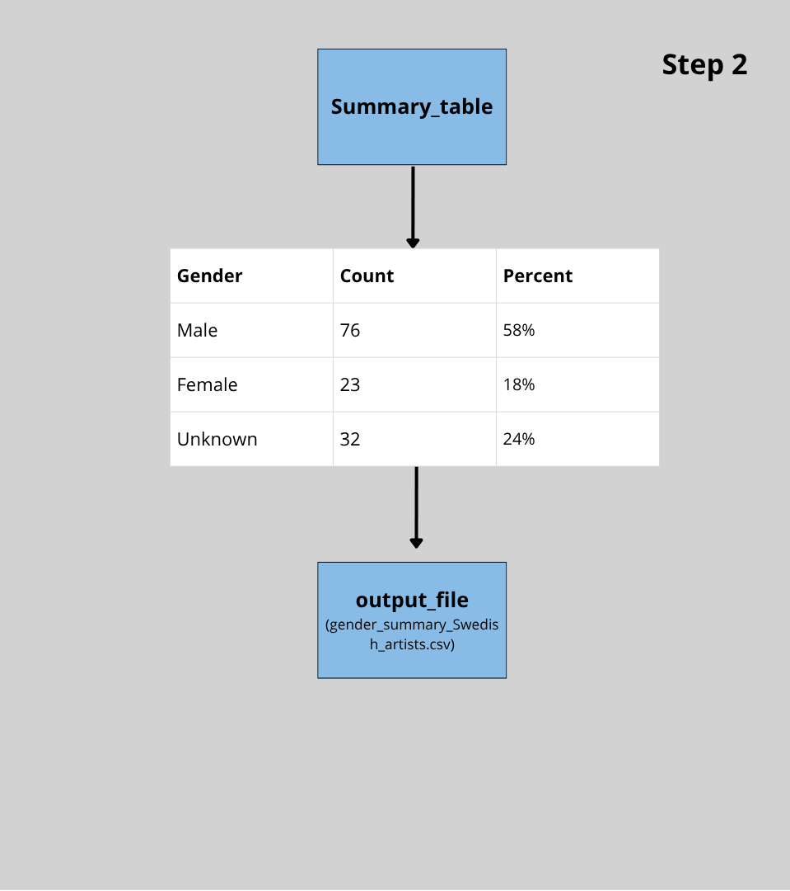

Visualisation of the the main steps of the count process.
Visualisation of the the main steps of the summary process.
The Project Algorithm
We began the work with our algorithm by discussing what we wanted it to actually achieve, and decided that the goal was to analyze the gender distribution among Swedish artists in the Museum of Modern Art collection (MoMA). We designed the algorithm to count how many of the artists in the dataset are categorized as female, male or unknown. We also designed it to calculate the percentage of each gender category. The result were written into a new CSV file with the summarized data.
After defining our goal and purpose, we explored the dataset to better understand the structure of it and which columns had information that could be useful. We quickly identified gender as a key attribute and that the algorithm should read each row of that column and check its value. From there, we made it follow the main steps which were to count males, females and unknown genders, calculate the total with a count but also percentage, and then save the summary in a new file. As a final step, the algorithm was told to print a short summary statement comparing the different count results in each category.
This way of designing the algorithm was chosen because it clearly demonstrates how data can be processed and summarized as an algorithm using basic operations like variables, iterations and selections. We wrote the algorithm in pseudocode to make it easier to understand with or without programming knowledge. Here you can find the pseudo code for the algorithm and here you can find the summary of the gender count.
To make the coding more understandable when writing it, we created a visualized model that illustrate the main steps of the count and summary process, which you can see to the left. The Variables are illustrated as boxes, and the arrows as assignments.